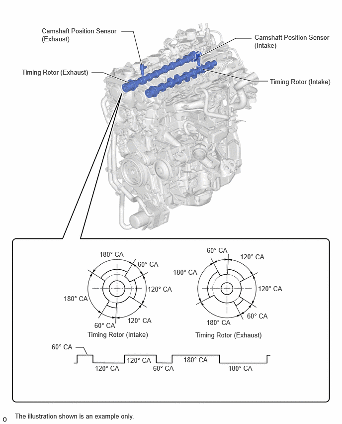

| Last Modified: 10-07-2025 | 6.11:8.1.0 | Doc ID: NM100000002KCM3 |
| Model Year Start: 2024 | Model: Tacoma HV | Prod Date Range: [03/2024 - ] |
| Title: T24A-FTS (ENGINE CONTROL): SFI SYSTEM (for 1Motor-HEV Model): CAMSHAFT POSITION SENSOR; 2024 - 2026 MY Tacoma HV [03/2024 - ] | ||
CAMSHAFT POSITION SENSOR
CONSTRUCTION
(a) Magnetic Resistance Element (MRE) type camshaft position sensors (intake and exhaust) are used. To detect each camshaft position, a timing rotor that is secured to the camshaft is used to generate 3 pulses for every 2 revolutions of the crankshaft. The timing rotor for each camshaft is part of the respective camshaft.
(b) An MRE type camshaft position sensor consists of an MRE, a magnet and a sensor. The direction of the magnetic field changes due to the profile (protruding and non-protruding portions) of the timing rotor, which passes by the sensor. As a result, the resistance of the MRE changes, and the output voltage to the ECM changes to high or low. The ECM detects the camshaft position based on this output voltage.